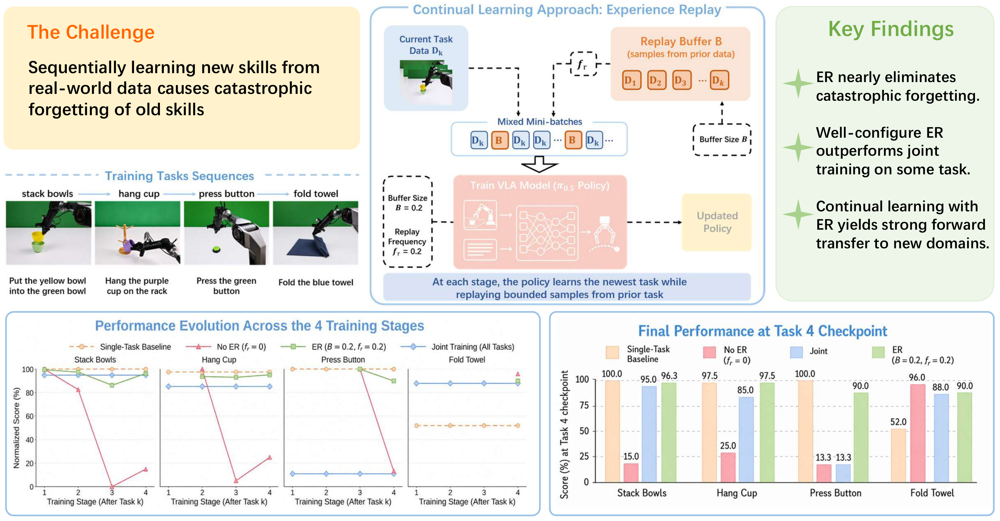
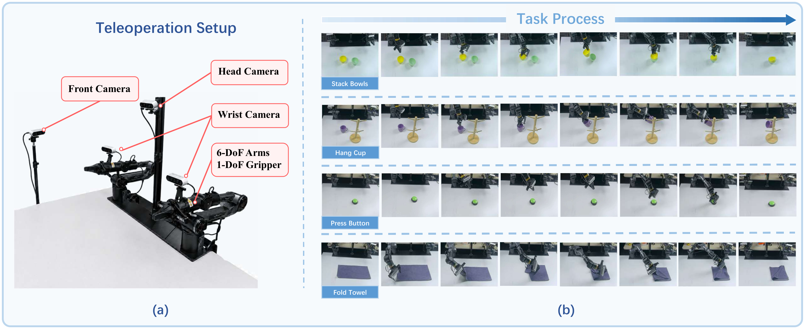
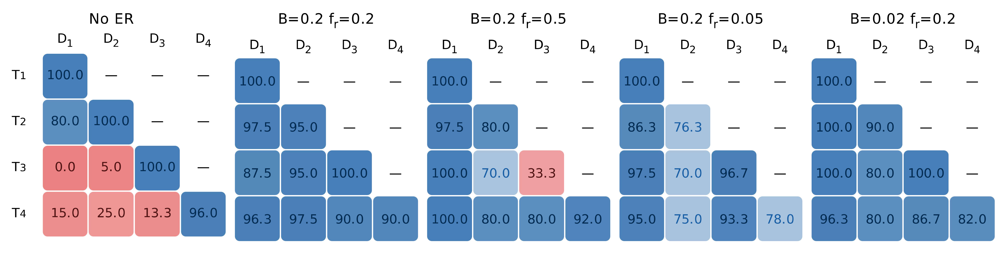

Overview of our investigation into real-world continual VLA learning. We construct four sequential manipulation tasks and systematically evaluate experience replay for mitigating catastrophic forgetting.
Abstract
Vision-language-action (VLA) models provide a promising foundation for general-purpose robotics. However, their successful deployment in real-world scenarios requires the ability to continually acquire new skills while retaining previously learned behaviors. While pioneering research has studied the continual learning of VLA models in narrowly simulated environments, this challenge remains largely unexplored under realistic conditions. To address this limitation, we construct a real-world continual learning dataset comprising four sequential manipulation tasks, spanning rigid-object pick-and-place, contact-rich pressing, and deformable-object folding. Using this dataset, we conduct comprehensive experiments and find that VLA models suffer significant catastrophic forgetting when continually learning from heterogeneous real-world demonstrations. We then systematically evaluate experience replay and uncover key implementation factors that govern its success. In summary, this work provides the first empirical study of real-world continual VLA learning and offers practical guidance for deploying long-lived robot policies.
Experiment Setup

Robot platform and task sequence. We adopt a multi-view teleoperation platform with the AgileX PiPER arm to collect demonstrations across four diverse manipulation tasks: Stack Bowls (rigid pick-and-place), Hang Cup (spatial alignment), Press Button (contact-rich localization), and Fold Towel (deformable folding).
Key Results
Catastrophic Forgetting
Naive sequential fine-tuning causes near-total forgetting: the first three tasks collapse to 15.0–25.0 (from single-task baselines of 97.5–100.0), with average NBT of +80.0.
Experience Replay Eliminates Forgetting
With modest replay budget (B=0.2, fr=0.2), average NBT drops from +80.0 to just +5.0, and all four tasks remain within 10 points of single-task baselines (avg 93.5).
Implementation Details Matter
Replay frequency exhibits U-shaped sensitivity. Action normalization consistency is critical—per-task statistics cause complete collapse (23.7 vs. 93.5 with shared stats).
Well-configured sequential learning with replay achieves 93.5 average score, significantly surpassing joint multi-task training (70.3). Joint training fails due to gradient interference and imbalanced loss scales across heterogeneous tasks.
Forgetting Analysis

Forgetting matrices under sequential fine-tuning. Without experience replay (left), all previously learned tasks collapse to near-zero performance. With appropriately configured ER (right panels), forgetting is largely eliminated. However, excessively high replay frequency impairs new-task learning, while insufficient replay data weakens retention.
Takeaways
Why real-world evaluation?
Real-world tasks expose heterogeneous action spaces and visual distributions that simulated benchmarks do not capture, making forgetting substantially more severe than in simulation.
Why experience replay?
A small replay buffer (20% data, 20% sampling ratio) nearly eliminates forgetting without architectural changes, making it a practical first line of defense for deployed VLAs.
Why shared normalization?
Per-task action statistics cause silent collapse on later tasks. Shared normalization statistics across the entire task stream are essential for stable continual training.
BibTeX
@article{zhu2026continualvla,
title={Can VLA Models Learn from Real-World Data Continually without Forgetting?},
author={Zhu, Jiarun and Hong, Yijun and Sun, Xiaoquan and Xu, Zetian and
Yuan, Mingqi and Wang, Zhiyong and Zeng, Wenjun and Chen, Jiayu},
journal={arXiv preprint arXiv:2605.26820},
year={2026}
}